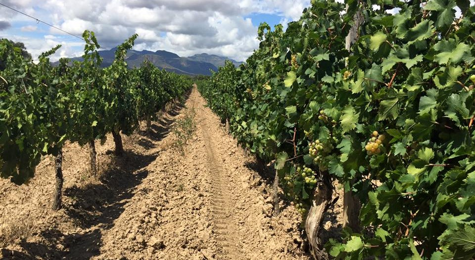

Valles y Chaco de Bolivia
Canción emblemática de Cochabamba
Cochabamba
- Adaptabilidad: La yuca se adapta muy bien a las condiciones climáticas y de suelo del trópico cochabambino, lo que permite su cultivo en diferentes altitudes. Usos culinarios: La yuca es un ingrediente fundamental en la gastronomía boliviana, especialmente en la región del trópico. Se consume de diversas formas, como sancochada, frita, en sopas y en otros platos tradicionales.
- Seguridad alimentaria: La yuca es un alimento básico para muchas familias cochabambinas, contribuyendo a la seguridad alimentaria de la región. Generación de ingresos: El cultivo de yuca genera empleo y contribuye a la economía local.
- Falta de tecnificación: En muchas zonas, el cultivo de yuca se realiza de manera tradicional, lo que limita la productividad y la calidad del producto. Industrialización: Existe un gran potencial para la industrialización de la yuca, lo que permitiría agregar valor al producto y generar mayores ingresos para los productores.
Chuquisaca
- Adaptabilidad: La cebada se adapta muy bien a las condiciones climáticas y de suelo de las tierras altas de Chuquisaca, lo que permite su cultivo en diversas regiones del departamento. Usos múltiples: La cebada tiene múltiples usos. Se utiliza para la alimentación humana y animal, en la producción de cerveza y otros productos fermentados, y como forraje para el ganado
- Generación de ingresos: El cultivo de cebada genera empleo y contribuye a la economía local. Materia prima para la industria: La cebada es una materia prima importante para la industria cervecera y otras industrias alimentarias.
- La chicha de cebada: Es una bebida alcohólica tradicional de Chuquisaca, elaborada a base de cebada fermentada. Propiedades nutricionales: La cebada es una buena fuente de fibra, proteínas y vitaminas del complejo B.
Canción emblemática de Chuquisaca
- 
Canción emblemática de Tarija
Tarija
- La viticultura es una actividad económica de gran importancia para Tarija, generando empleo y divisas a través de la exportación de vinos y singani. Además, el turismo enológico ha cobrado gran relevancia en los últimos años, impulsando el desarrollo de la región.
- Moscatel de Alejandría: Es la variedad más emblemática y utilizada para la producción de singani, un destilado único de Bolivia. Tannat: Originaria de Francia, esta variedad se ha adaptado muy bien al clima tarijeño y se utiliza para la elaboración de vinos tintos de cuerpo robusto y taninos marcados. Syrah: Otra variedad internacional que ha encontrado en Tarija un terroir excepcional. Sus vinos se caracterizan por aromas a frutos rojos, especias y notas minerales.
- Los vinos tarijeños han ganado reconocimiento internacional gracias a su calidad y diversidad. Se producen vinos tintos, blancos y rosados, cada uno con características únicas que reflejan el terroir de la región.